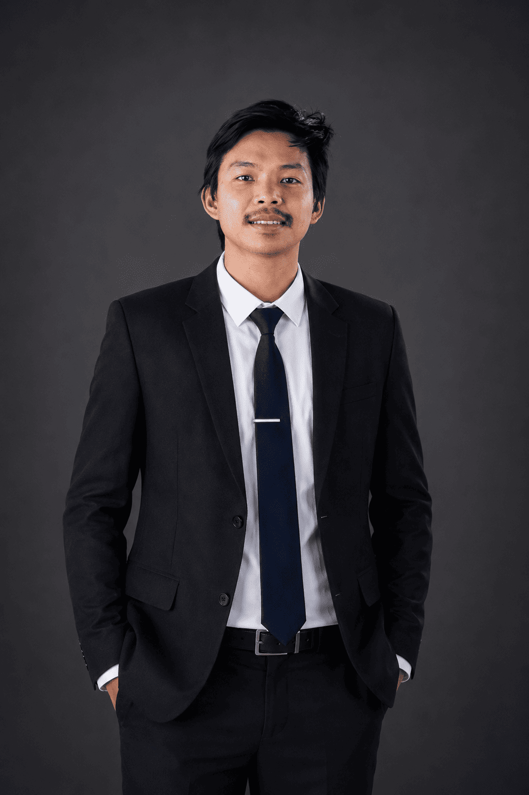
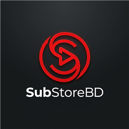
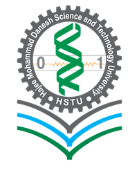
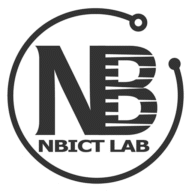

Agricultural engineer · Dinajpur, Bangladesh
I build AI systems that help farmers decide with confidence.
I work where crop science meets computer vision and geospatial data — turning a leaf photo, a drone frame or a satellite tile into a clear next step for the person standing in the field. Founder of Crops Doctor.

Building CropsDoctorAI — crop disease detection from phone photos and UAV imagery.
About
Agricultural engineering is the base layer. Software is the instrument.
I trained as an agricultural engineer at Hajee Mohammad Danesh Science and Technology University, where my research moved from precision farming and geospatial analysis to UAV-based crop disease detection. That work made one thing clear: the hard part is not the model, it is getting a usable answer to a farmer standing in a field with a phone.
So I build the whole path — data capture, annotation, model inference, API and the interface on top. Today I lead Crops Doctor, an AI crop-health platform used for disease diagnosis, soil intelligence and dosage guidance, and I build the mobile application and inference backend behind it.
- Focus
- AI crop health, remote sensing, decision support
- Building
- Crops Doctor — cropsdoctor.com
- Stack
- Python, FastAPI, Flutter, Dart, GIS & UAV pipelines
- Based in
- Dinajpur, Bangladesh — open to research and collaboration
What I do
-
Crop health AI
Visual models that identify disease from a phone photo and return a plain-language next step.
-
UAV & remote sensing
Drone and satellite imagery analysed with GIS tooling and converted into field-level insight.
-
Full-stack delivery
Mobile apps, web platforms and APIs built end to end — Flutter, FastAPI and modern web.
-
Field-first research
Every idea is tested where it matters: with real crops, real devices and real farmers.
Selected work
Systems built for the real world.
Crops Doctor
A free AI farming platform: photograph a leaf for instant disease diagnosis across 30+ crops, calculate NPK fertilizer needs on the BARC 2024 guide, analyse soil fertility on SRDI standards, and get hyper-local weather — in Bangla and English, with no registration. Runs as a web app and Android app on Flutter over a FastAPI backend. Visit cropsdoctor.comSoil intelligence
Soil fertility and crop-suitability analysis built on the BARC 2024 guide and SRDI regional database standards — get a fertility index, suitable crops and fixes for nutrient deficiencies.Farm calculators
Precise NPK dosing per land area (acre, bigha, hectare) and crop type from the BARC 2024 guide, plus pesticide tank calibration for water volume and safe spray dosage.
SubStoreBD
A subscription marketplace for Bangladesh — Netflix, YouTube Premium, PUBG UC, Free Fire diamonds and more, with BDT pricing and instant delivery. Built and shipped end to end as a commercial web product.Alomoy Chakma
A digital archive of traditional Chakma-language literature by the well-known Chakma poet Alomoy Chakma — his poems, rhymes, short stories and songs, plus five published books as free PDF downloads.Curious about the research behind these systems? Read the trajectory
Experience & research
Learning the whole terrain.
From undergraduate research on precision farming to running a product team — the same question each time: what does the field actually need?
-
2025 — now
Founder & COO Crops Doctor
Building a digital agriculture platform for disease diagnosis, crop guidance and farmer decision support.
-
2026 — now
Mobile Application Developer Crops Doctor
Flutter and Dart mobile app, FastAPI inference backend, product UI/UX and Google Play closed testing.
-
2021 — now
Agricultural Engineering HSTU
Undergraduate research across precision farming, geospatial analysis and UAV-based crop disease detection.
-
2025 — now
UAV research — potato disease detection Field study
Drone imagery captured at 2 m, 7 m, 10 m and 12 m, annotated in Roboflow to train a deep-learning detection pipeline.
Credentials
Proof of practice.
Recognition for turning agricultural research into tools people can actually use.
Certifications
-

Fundamentals of Remote Sensing
NASA — National Aeronautics and Space Administration
View on LinkedIn -

-

Agricultural Extension & Field Training
Hajee Mohammad Danesh Science and Technology University
View on LinkedIn -

Press & honours
-
Developer of AI “Crops Doctor”
Featured article on the platform and the problem it solves for farmers.
See the feature -
Recognised for AI crop-disease detection
Coverage of the detection work behind Crops Doctor.
See the feature -

Smart agriculture and farmer guidance
Feature on how the platform guides day-to-day farming decisions.
See the feature
Contact
Have a field problem worth solving?
Research collaboration, a product idea that needs building, or a dataset that nobody has made sense of yet — send it over. I reply to every serious message.
- madeshchakma@gmail.com
- /in/madeshchakma
- Platform
- cropsdoctor.com
- Based in
- Dinajpur, Bangladesh · GMT+6
- Status
- Open to research and collaboration